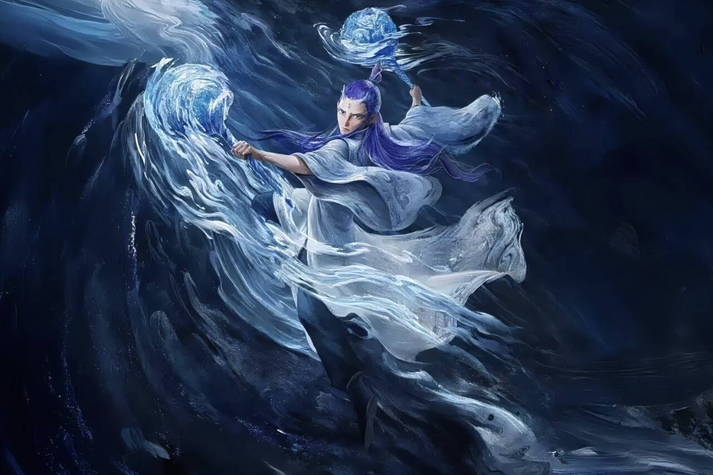
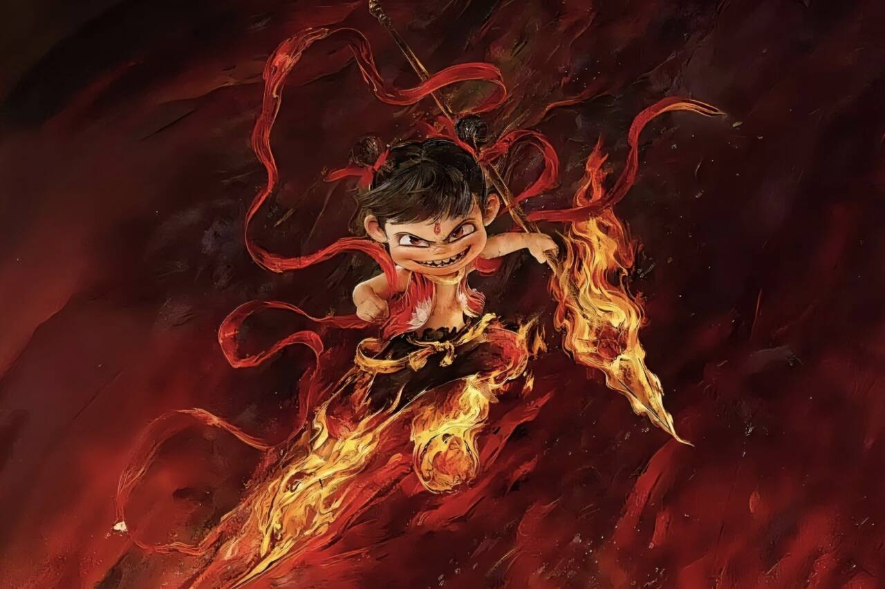
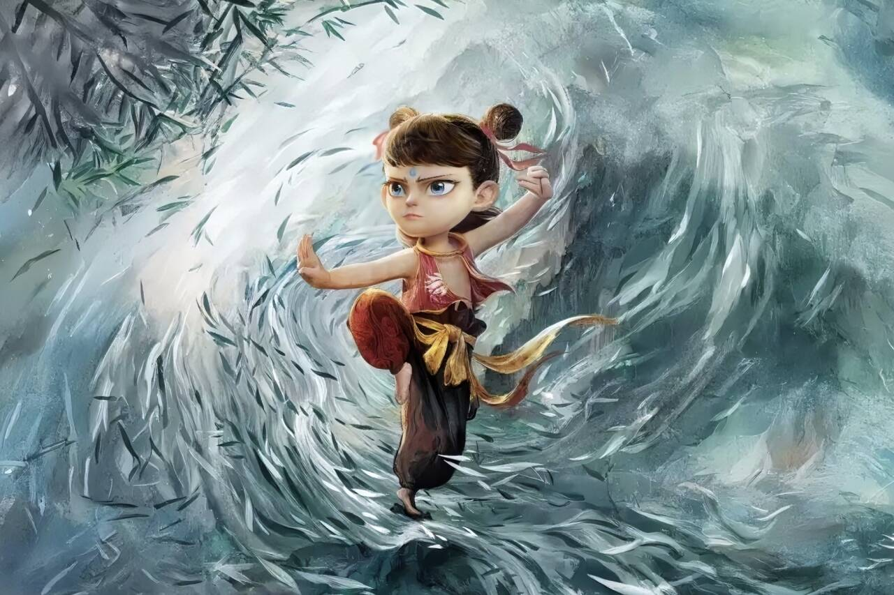

电影———《哪吒之魔童闹海》
《哪吒之魔童闹海》是饺子编剧并执导的奇幻动画电影 ，由吕艳婷、囧森瑟夫、陈浩、瀚墨、绿绮等担任主要配音。该片是《哪吒之魔童降世》的续篇，延续了对中国传统神话故事的创新性表达。讲述了哪吒、敖丙在天劫之后重塑肉身，在过程中遭遇重重困难，面临新挑战的故事。
影片于2025年1月29日（大年初一）在中国大陆2D、3D全版本上映，2月14日在北美上映，2月22日起在港澳地区全面上映，3月陆续在马来西亚、英国、爱尔兰、比利时等国家上映，4月4日在日本上映。截至2025年4月9日12时8分，《哪吒2》累计报收票房（含点映、预售及海外票房）超156亿元，其中海外票房突破3亿元，在全球影史票房榜位列第五位，并一举打破多项票房纪录。该片不仅成为中国影史票房冠军，还是全球单一市场票房冠军、全球动画电影票房冠军以及中国香港及澳门影史内地电影票房冠军，内地连续单日票房冠军纪录达64天。

剧情照片


